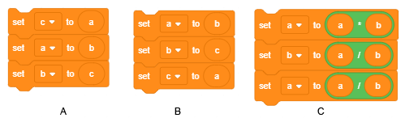

Variables¶

Variables are one of the most important concepts in programming. In this lesson, we will get to know different types of variables and show how we can monitor the changes of their values on the stage. We will use project examples with scripts, which have a complex structure, to show how we can create competitive games, where we need to keep the scores, as well as how to form complex expressions that calculate the value of the variables.
What is a variable?
Variable is an assigned area of computer memory. We could say that a variable is like an assigned box in which the program temporarily stores the data it is currently working with.

The variable in the figure above is named Х, and its current value is 15.
Variable can store one value, for example, a number or a letter. These are simple variables. However, there are also complex variables, which store multiple values, for example, a series of letters (string), a series of numbers, words, … In Scratch, this string is called a list.
In previous projects, we used unnamed values. The text “Hello World”, and others we typed into the Say and Think blocks are all data - strings (series of signs).
The numbers we entered as arguments in motion commands (move, point in the direction, change by) are values, which can be set in variables.
The condition for repeating and branching can have two values - true and false; therefore, this is also a value, a logical value.
For more complex programs, we will have to assign certain values, i.e. to introduce variables.
How to create variables?
In the beginning, there are no blocks in the Variables group (image A). First, you need to create a variable by clicking the Make a variable option.

By clicking this button, you will open a dialogue window for creating a new variable (B).
The variable can be local, added only to the active object (sprite or stage) or global.
A global variable can be used by all objects in the project. When you type in the name of the variable and click the OK button, blocks for four commands and one reporter with the name of the variable on it and a checkbox next to it will appear in the blocks palette (C).
The blocks, which represent the variables, are called reporters because they report on the current value of the variable. Reporters appear in two different shapes, and they can be set only in input fields of command blocks with corresponding shapes.
Reporters with rounded edges (ellipse) store numbers or strings, and they can be inserted into the blocks with white rounded input fields.
Hexagonal reporter blocks contain logical data (true or false), and they can be inserted into blocks with appropriately shaped input fields.
Certain reporter blocks also have checkboxes. If the user clicks on the checkbox, a monitor will appear on the stage, and it will display the current value of the variable. The monitor can display the values of variables in many different formats shown in the following figure.
{kind=link}
a small display of the value with the name of the variable,
large display of the value without the name,
with a slider, which enables the user to change the value of the variable.
The format can be changed by double-clicking on the monitor. The slider format can only be used for variables created by the user. By right-clicking on the slider, you can set the minimum and maximum values.
 Study the following examples¶
Study the following examples¶
Example 1 - Project “The Hunt”¶
This project is a game made for two players. Each player uses the keyboard to control the movement of his/her cat sprite, which is chasing a mouse that appears in randomly chosen positions on the stage. The player whose cat touches the mouse first receives a point. When one of the cats touches the mouse, it disappears and appears somewhere else. The first player controls the yellow cat with the arrow keys, and the second player controls the grey cat with the keys W A S D.
We are introducing complex conditions and logical operations.
Creating the backdrop and sprites
In this project, there are three sprites - Cat 1, Cat 2 and Mouse and one backdrop. We will create the backdrop by slightly modifying the Hay field backdrop form the Scratch library.

The sprite Cat 1 was created from the sprite Cat 2 from the sprites library by adding one more costume, and Cat 2 was created by copying Cat 1 and changing the color. The third sprite was uploaded from the Internet, and it has only one costume since there is no need to animate its movement in the project.

The behavior of the sprite Cat 1
First, we will write and test the scripts that we will add to the sprite Cat 1, and then we will duplicate this sprite and change the scripts slightly.

In the beginning, the sprite is pointing to the mouse, and the player can just use the key ↑ to reach the mouse and gain the first point. Later in the game, the player will have to lead the cat toward the mouse on his/her own by using the arrow keys ← and →, which are used to turn the sprite 15 degrees to the left and to the right. Sometimes, the player can use the key ↓ to move the sprite backward. For the sprite Cat 2, the navigation scripts are the same, only the keys used for moving the sprite are different. The key W moves the sprite forward, and A and D are used to turn the sprite 15 degrees to the left and to the right. The script that starts the program is also almost the same; the only difference is that another sprite is sent to the lower left corner, i.e. it is sent to the point that has the coordinates (-190, -130).
The behavior of the Mouse sprite
The following figure represents the script added to the mouse sprite. In the beginning, the mouse is placed at a randomly chosen location. After this, it enters into an infinite repetition (forever loop) of the following actions.
The program waits until one of the cats touches the mouse,
The mouse hides and reappears at another randomly chosen location.
(within the loop, the mouse can appear both near the top and the bottom edge of the stage because now the interval for the value of the coordinate у is [-150, 150])

Formation of a complex condition
The condition in the command  is composed of two conditions: Cat 1 touches the mouse or Cat 2 touches the mouse.
is composed of two conditions: Cat 1 touches the mouse or Cat 2 touches the mouse.
A complex condition is created as follows.
From the group Operators, we will select the appropriate operation - in our case the logical operation or
 .
.We place the appropriate conditions into the empty hexagons,

Finally, we place this complex condition into the block “wait until”.

Upgrading the project
We will upgrade this project by introducing 2 variables: Player 1 and Player 2, which will store players’ points. Every time one of the cats touches the mouse, the player controlling that cat will gain a point. This will be stored in the script added to the mouse sprite. Players’ points will be displayed on the screen. We will also introduce a timer, which will stop the game after the specified time has elapsed. The winner is the player who has more points.
In order to be able to track the players’ points, both variables Player 1 and Player 2 have to be checked, and their monitors have to be displayed in the first format.

At the beginning of the script added to the mouse, we need to set their initial values to 0. Every time a cat touches the mouse, the number of points should increase. Therefore, the mouse script now has the following appearance.

What remains is to set the time limit for the game. We can do this by setting the value of the variable Time, located in the script triggered by clicking on the green flag, to the desired number, for example, 120 seconds. Then we will put the command  into the loop, which will be repeated 120 times, and decrease the value of the variable by 1.
We will add the command
into the loop, which will be repeated 120 times, and decrease the value of the variable by 1.
We will add the command  after the loop, and attach this script to the mouse sprite.
after the loop, and attach this script to the mouse sprite.

Example 2 - The Game “Maze”¶
In the project Maze, the aim is to get the Mouse 1 sprite through a complicated maze. The exit is located on the top the stage, so the condition for the game to be completed successfully is for the sprite’s coordinate to be greater than 180. The sprite is controlled with the arrow keys. If the sprite touches any of the walls, which are black, it will return to the starting position.
In our remix, the movement of the mouse will be controlled more precisely. By pressing the arrow key once, the sprite will move only 3 steps (and not 10 like in the original project). Touching the wall will not be sanctioned with going back to the start, the sprite will only bounce off the maze wall (moving -2 steps), like in the maze starter project. Since the mouse frequently touched the walls with its tail, we cut off its tail (in the paint editor, first select the tail by using the tool reshape and then delete it by pressing the key Del).
The modified scripts attached to the mouse sprite are represented in the figure below.

However, the game will not be easier because the mouse will have to avoid its enemies: 2 poisonous balls and the ghost of the maze.

The balls, like the mouse, bounce off the walls of the maze, while the ghost can pass through the walls.
The mouse has 100 energy units at the beginning, which decreases by 5 every time it hits the maze wall, and if the enemy touches the mouse, it is even more dangerous. If a ball touches it, it will lose 10 energy units, and if the ghost touches it, it will lose 50.
The game ends successfully if the mouse reaches the exit of the maze, and fails if it runs out of energy inside the maze.
The behavior of the ball
At the beginning of the game, the ball is hidden. It appears after 1 to 5 seconds from the start of the game, the coordinates of the Ball 1 are (-120,0), and of Ball 2 (165,55).

Behavior of the ghost
The ghost is also hidden at the beginning of the game. It appears after 5 to 10 seconds. Until it touches the mouse, it glides for 5 seconds to a randomly chosen position in the upper half of the maze. If it touches the mouse, it will reduce the number of its energy units by 50 points, then it will hide, and after 5 to 10 seconds it will repeat the previously described movement.

Project 3 - “Guess my Number”¶
The King in the Kingdom of Eights had 8 daughters. When the time came for his favorite daughter, the youngest princess, to get married, he asked what kind of a man she would want to be her husband.
The princess decided that she would marry a smart young man, who can solve all the puzzles she puts before him.
The first puzzle was to guess, by asking as few questions as possible, what is the number from 1 to 100 that she was thinking of.
If he asked any questions, she would answer: My number is lower, My number is higher or Well done, you guessed.


Upgrades in the project Guess my number2
The princess was told by her mathematics teacher that, by asking smart questions, the puzzle could be solved in maximum 7 attempts, so the princess decided that only candidates who solve the puzzle in 7 and fewer attempts would go through.
To create a project where the princess will check if the candidate guessed correctly and how many attempts it took him to guess correctly, we will have to create one more variable called attempt. The value of this variable will increase by 1 after the user has asked each question.
This way, when we exit the loop in which we are looking for an answer, we will have a record of the number of attempts. The princess will say after how many attempts the candidate guessed her number, and then if there were less than 8 attempts, she will say This means that you played wisely, and if the number of attempts is equal to or greater than 8, she will say This means you did not solve the puzzle in the best possible way.
Example 4 - Project “Young Mathematician”¶
In a magical land, there are four sprites a young wizard Mathematician, Number1, Number2 and a Sign used for arithmetic operations. Each Number has 3 costumes in the shape of numbers arranged in a strict order: 1, 2, 3. The Sign has two costumes in the shape of signs used for arithmetic operations: * and +.

The Numbers and the Sign like to play a game called Examples: every time the user clicks on the button Set a Task they randomly choose their costume, like when someone flips a coin. However the Numbers and the Sign change, the Mathematician adds and multiplies them without making a mistake.
It is not known exactly which wizard taught him this, but it is said that the Mathematician is looking for a master who would teach him to divide and subtract.
The secret of the Mathematician is that, in addition to having a name and an image, every costume also has a sequence number. It is an ordinary number with which mathematical operations can be performed. Mathematician just needs to find out which costume sequence number for each Number and Sign was chosen in the example.
Since we have already seen that reporters know everything, the Mathematician can just take the reporters from the group Sensing, the branching block if then from the group Control, the logical operator for equality and mathematical operator for multiplying and adding numbers from the group “Operators*.
In the first version of the project, the user clicks the imagine button to set the task, and the young wizard solves it.
Creating the Sprites
We will choose the Wizard Boy sprite to be our main sprite, and for the Number1 we will choose the sprite 1-Glow from the sprites library. Then, in the Costumes tab, we will introduce two more costumes for the Number1 sprite, first 2-Glow, and then 3-Glow. The Number2 sprite will be created by duplicating the Number1 sprite. Both costumes for the Sign sprite are drawn in the paint editor (a circle for multiplication, and the sign + for adding). We will also create the button Think of a task by using the sprite button-3, and on its first costume we will add the text “Think of a task”.

The Scenario for Scripts and Sprites
The young wizard is located on the left side of the screen, and on the right side, there are Number1, Sign and Number2. The button Think of a Task is located at the bottom of the screen. The program starts when the button Think of a Task is clicked. Clicking the button broadcasts the message “task”. Every sprite has its reaction to the message: the mathematician thinks “Hmmm…”, while the numbers and the sigh react by appearing on the stage in a randomly chosen costume. When the mathematician sprite is clicked, a comic book bubble is displayed with the result of the given operation. Sprites Number1, Number2 and Sign have only one script each - reaction to the event When I receive the message with the task with just one command - Change the costume with a random number from 1 to 3 (1 to 2 for the Sign). The button sprite reacts only when it is clicked. It then changes the costume (so we know it was clicked) broadcasts a message, waits for half a second and goes back to the original appearance. The scripts associated with the numbers and the button are shown in the following figure.

The scripts that describe the behavior of the mathematician sprite when he receives the message “task” and when the user clicks on it are shown in the following figure.

Let’s look at the second script associated with the mathematician sprite. When we click on the sprite, he thinks of an answer, and this is how he does that. As we already mentioned before, the Sign can appear in one of the two costumes: the first costume - the costume that corresponds to the sequence number 1 is for multiplication, therefore, if the randomly generated number is 1, the mathematician will have to multiply the numbers.
If number 1 was not generated for the Sign sprite, the mathematician would have to add the numbers. Similarly, the costume numbers for the Number1 and Number2 correspond to the numbers the mathematician sprite should use to perform the given operation. We used the operator join for the text that appears in the comic book bubble. The operator command  is one of the operator commands that can be performed on the type of data called string (series of characters).
This command takes two separate strings of characters and makes one string, which contains all of the characters from both strings, where the characters of the second string are added to the end of the first string. For example, the running of the blocks in the figure on the left will have the following result. If the answer to the question “What is your name?” is “Nikola”, the Cat sprite will say “Hello Nikola”.
is one of the operator commands that can be performed on the type of data called string (series of characters).
This command takes two separate strings of characters and makes one string, which contains all of the characters from both strings, where the characters of the second string are added to the end of the first string. For example, the running of the blocks in the figure on the left will have the following result. If the answer to the question “What is your name?” is “Nikola”, the Cat sprite will say “Hello Nikola”.

How are function blocks inserted into other function blocks?
In our script, which we added to the mathematician, we put the operator join in the argument block of the command think of. In the first input field of the operator join we typed in the text “The answer is” and in the second we put the operator * (multiplication) or + (addition). Then we entered the costume number of the sprite Number1 into the first input field of the block performing the arithmetic operation, and in the second input field, we entered the costume number of the sprite Number2. Is this explanation clear enough?
If you are still not sure how to do this, see a more detailed explanation.
In the chapter Loops we made a classification of blocks used in Scratch and indicated that so-called Function blocks are inserted into the so-called Command blocks. As we start creating projects that are more complex, we will have to use more complex function blocks, which are composed of several other function blocks, as in the example we are describing here. This is why we will use images to show step-by-step how the complex argument block think of is created. Doing this, we will go backward, from the end to the beginning. We should get:
We should get
How can we get
 and
and  ?
?
а) We take the block  from the group Sensing.
from the group Sensing.
From the sprite list, which we get when we click on the triangle next to the Mathematician sprite, we will choose Number1 (i.e. Number2)
From the list of variables added to this sprite, which we get when we click on the triangle next to the variable place x, we will choose costume number
{kind=link}
How can we get

а) We take the block  from the group Operators
from the group Operators
We put the first argument we got from description 1 into the first box

We put the second argument we got from description 1 into the second box
How can we get

а) We take the block from the group Operators
We type in the text “The answer is ” into the first field

We put the argument we formed from description 2 into the second field
Finally, the argument formed in this manner, we put into the field of the block

The First Upgrade
If we want the project to use the numbers from 1 to 9, we need to add the costumes with the numbers from 4 to 9 to the sprites Number1 and Number2 (the numbers from 4-Glow to 9-Glow consecutively) and in their scripts, in the command change costume with a random number you should put “1 to 9” instead of “1 to 3”.
The Second Upgrade
We can upgrade the project so that, after receiving the message task, the young wizard, asks the user the appropriate question, and then broadcasts if the answer is correct or not. In this version of the project it is not necessary to process the event click on the sprite added to the mathematician sprite. Instruction on how the program should be used should also be added. This can be achieved with the introduction of one more button on which we can write the word Instruction. When this button is clicked, it broadcasts a message; both the backdrop and the mathematician sprite should react to this message. The backdrop will change into the Backdrop2, which has the instruction written on it, and the mathematician shrinks to 30% of his size so as not to cover the instruction.

Тhe Third Upgrade
If we want the program to perform the arithmetic operations of subtraction and division, the project will become more complex. To make this upgrade, we need to add two more costumes to the Sign sprite – for the subtraction and : for the division. We should also change the script, which describes the behavior of the mathematician when the user clicks on it.

It is assumed that the user is familiar with the concept of negative numbers. When it comes to the division, we need to ensure that the result is an integer number and avoid the division by zero. To avoid the potential problems when it comes to division, if the selected operation, which is randomly generated, happens to be division, we will broadcast the message divide, while for all other operations we will use the same solution applied in previous versions of the project.

Therefore, when the button Think of a Task is clicked, it broadcasts the message “task”, both the Mathematician and the Sign react to this message. The Mathematician thinks “Hmmm…”, and the Sign generates a random number from 1 to 4 and appears in the appropriate costume (1 - multiplication, 2 - addition, 3 - subtraction, 4 - division).
For all operations except division, the Sign sprite will broadcast the message “regular”. If the division is chosen, the sprite will broadcast the message “divide”, which will trigger a script for calculating the quotient of two numbers that ends with the broadcasting of the message “division”. The sprites Number1 and Number2 react to the messages sent by the Sign sprite.
The sprites Number1 and Number2 react to the message “regular” the same way they reacted in the previous versions of the project, i.e. they appear in one of the randomly chosen costumes from 1 to 9. However, if the division was randomly chosen, the task will be set up in a different manner, the program goes from the result toward the numbers that produce it. In the procedure Divide, two random numbers are generated from the interval [1,9]. The first number is assigned to the variable quotient, and the second to the variable divisor. The result of the multiplication of these two numbers is the variable dividend.
The value of the variable dividend is assigned to the sprite Number1 and the value of the variable divisor to the sprite Number2. This way, when the dividend is divided by the divisor, the mathematician will certainly receive an integer value from the interval [1,9].
{kind=link}
We will use this method of generating tasks, from results to operands in other projects as well. This way, we can ensure that the user is given a task that he can solve, for example, not to get negative numbers when subtracting numbers, or to get a result greater than 50 when performing multiplication and that the factors can be larger numbers, and the like.
What emerges as a new problem, when tasks are solved in this way, is that the dividend is likely to be a two-digit number, and it can also end in zero, which was not included in the costumes for the sprite Number1 in the previous versions of the project. This can be resolved by introducing one more sprite, a duplicate of the sprite Number1, which we will call Tens, and adding the number zero as the tenth costume to the Number1. Of course, the sprite Tens is hidden and appears on the stage only if the Sign sprite broadcasts the message divide, and the previously calculated dividend is a two-digit number (which will be detected by the variable number of digits). This is when the Tens (the digit in tens’ place of the dividend) appears on the left side of the sprite Number1, which receives the value of the units digit of the dividend.
To extract the digits from the dividend, we use the operation  , which extracts the character with the appropriate sequence number from the string.
, which extracts the character with the appropriate sequence number from the string.
Since the Scratch performs the automatic conversion of the data from numerical to string and vice versa, the digits of multi-digit numbers are simply separated by this operation, and it is not necessary to explain what an integer division is, nor which operation returns the remainder of an integer division. The following figures represent the scripts added to the sprites Number1, Number2, and *Sign.

 Did you understand?¶
Did you understand?¶
Question 1¶

What is the value of the variable а after the execution of the commands:
Question 2¶

What is the value of the variable а after the execution of the commands:
Question 3¶

What is the value of the variable y after the execution of the commands:
Question 4¶

What is the value of the variable y after the execution of the commands:
Question 5¶
- с is an auxiliary variable.
- а is an auxiliary variable, b and C exchange the values.
- If b=0, the division is not defined.
Q-65: Which of the following series of commands exchanges the values of the variables a and b? (Select all correct answers)
{kind=link}
Question 6¶
- 6 and 6
- 3 and 3
- The branching condition has been fulfilled; therefore, the initial value of the variable is increased.
- 6 and 3
- 3 and 6
Q-66: What will the sprite say after the execution of the command stack a) and what after the stack b)?

Question 7¶

- a=5
- It is false that 5<5, the branching condition is not fulfilled.
- a=0
- 0<5.
- a=10
- It is false that 10<5, the branching condition is not fulfilled.
- a=4
- 4<5.
Q-67: For which values of the variable а will the variable b receive the value 1? (Select all correct answers).
Question 8¶
- a=5 b=10
- 5<10.
- a=0 b=-1
- Since 0>-1, the branching condition is not fulfilled.
- a=10 b=5
- Since 10>5, the branching condition is not fulfilled.
- a=4 b=4
- Since 4=4, the branching condition is not fulfilled.
Q-68: For which values of the variables а and b will the variable min receive the value of the variable a? (Select all correct answers).

Question 9¶
{kind=link}
What will be the value of the variable a after the execution of the condition command, if the values of the variable a and b were previously: a=4 and b=2?
Question 10¶
- yes
- For а=0 the first command assigns the value 5 to the variable b, and the second command the value 2.
- no
Q-69: Do these two conditional branching commands always perform the same job?

Question 11¶

- b=5
- b=2
- The branching condition has been fulfilled; the initial value of the variable is increased.
- b=6
- b=3
Q-70: What will be the value of the variable b after the execution of the condition command if the value of the variable b was previously b=2?
- b=5
- b=2
- b=6
- The branching condition is not fulfilled; therefore, the initial value of the variable does not change.
- b=3
Q-71: What will be the value of the variable b after the execution of the condition command if the value of the variable b was previously b=3?
Question 12¶
{kind=link}
-
Q-72: By dragging the rectangles, match the initial values of the variables with values received after the execution of the conditional command.
Try again
- a=2 b=1
- a=2 b=5
- a=2 b=-2
- a=-5 b=-2
- a=-2 b=1
- a=-2 b=5
- a=-2 b=-1
- a=-5 b=-1
 Try it!¶
Try it!¶
Exercise 1¶
Write a series of commands that:
exchanges the values of two variables;
determines which number is greater between two numbers entered from the input;
determines the minimum of three numbers entered from the input.
Exercise 2¶
Check in Scratch whether the following stacks of commands exchange the values of the variables х and у regardless of their initial values.

What happens if х=0 or у=0?
Exercise 3¶
Write a program, which repeats the following sequence of steps:
the sprite asks the user to enter a natural number and then says
which number comes before,
which number comes after,
which number is double the value and
which number is half the value of the entered number.
Repetition should be stopped when the user enters the number 0.
Exercise 4¶
Write a program, which repeats the following sequence of steps:
the sprite asks the user to enter two whole numbers х and у that are not zero and then says
the sum of the numbers “х” and “у” is “х+у”,
the difference of numbers “х” and “у” is “х-у”,
the product of the numbers “х” and “у” is “х*у” and
the quotient of the numbers “х” and “у” is “х/у”.
whereby instead of the variables listed under quotation marks, it should put their values.
Repetition should be stopped when the user enters the number 0 either as the value of х or у.
Exercise 5¶
The expression 16 : 8 : 4 : 2 is given. What is the value of this expression? Write it in Scratch and check.
If we add two pairs of brackets in different positions, we will get expressions that have different results. Determine all possible values that can be obtained in this way.
Write each possibility in Scratch and check your results.
Help. Adding brackets will give you the following expressions: ((16 : 8) : 4) : 2
(16 : (8 : 4)) : 2 (16 : 8) : (4 : 2) 16 :((8 : 4) : 2) 16 : (8 : (4 : 2))
 Debug it!¶
Debug it!¶
Bug 1¶
- Question
The student wanted to change the behavior of the cat in the project “The Hunt”. He/she wanted the cat to go around in circles every time it touches the mouse (it moves 1 step and turns 1 degree 360 times). The student added the following scripts to the cat sprite, but when the project was tested, the cat did not turn when it touched the mouse. Where is the bug?

Answer:
The condition is only checked immediately after the green flag has been clicked. It needs to be checked constantly, and this means that the conditional command should be placed in an infinite loop.
Bug 2¶
- Question
The student wanted to make a simpler version of the Maze project without the variables, so he/she arranged for the mouse sprite to go back to the starting position (23,-158) when it touches the wall of the maze (touches the color black). However, the mouse touched the walls of the maze even when the student did not expect that to happen. Where did the student go wrong?
{kind=link}
Answer:
The sprite moves before it is pointed in the specific direction, so it steps in the direction determined by the previously executed command.
Bug 3¶
- Question
This program was also supposed to take the sprite back to the starting position every time it touched the wall of the maze. However, sometimes this happened, and other times it did not. What went wrong?
{kind=link}
- showtitle
Show the Answer
- hidetitle
Hide the Answer
Answer:
The block if then, which checks if the sprite touched the wall, is placed inside a block that checks if the left arrow key is pressed, and it should be after it. This way, the condition attached to the sprite touching the wall is checked only if the sprite goes to the left.
 Summary¶
Summary¶
In this lesson, we learned how to create and use variables. We also introduced the blocks from the group Operators and showed how we could create complex function blocks. The projects we used as examples have a more complex structure - they are composed of basic elements of program logic. Finding logical mistakes in this type of projects is not easy. This is why we will use the following lessons to show ways that project development and testing can be made easier by splitting large scripts into procedures - logical parts that each perform a single function.
New concepts: variable - simple, complex, local, global.
Scratch commands:  -
-  ,
,  ,
,  , ;
, ;  - ,
- ,  ;
;  - ,
- ,  , ,
, , 
 Create a projects¶
Create a projects¶
Project 1 - “Calculator”¶
Start a new project called Calculator in which you will make a calculator that performs the basic arithmetic operations - addition, subtraction, multiplication and division. For this exercise, you will need the following sprites: the button with the sign +, the button with the sign -, the button with the sign *, and the button with the sign /.
Apart from the sprites, you will also need the following variables: input values x and y and the Result.
Create the project in the following manner:
As the backdrop, draw a rectangle with “CALCULATOR” written in the upper left corner.
Create all necessary variables and arrange them on the calculator.
Upload 4 sprites, which you will use to perform the arithmetic operations and arrange them on the calculator.
For each button create the following script: when you click on the button, the appropriate arithmetic operation is performed.
Test the result.
The calculator probably works fine, but it is not obvious which operation was performed last.
Therefore, change the calculator so that the button, which was pressed last, changes the color to red (this will mean that the result seen on the stage is the result of that specific operation).
Instruction: You have to create a second costume for each button. The button in the new costume should be red. When you click on the button, the script should broadcast the message “New operation”, and then change to the red costume. In addition, each button should have a script that “listens” for the messages, and when it receives the message “New operation”, it should change back to the original costume.
Project 2 - Program Based on Block Diagrams¶
Create a program in Scratch that fits the following algorithm.

Determine the result of the execution of this program for а = 157; а = 342; а = 529.
How many digits will be in the result obtained by the execution of the given program?
Does the number of digits depend on the input value of the three-digit number а?
Edit the program so that the result is always a two-digit number.
Project 3 - “Car Race”¶
Start a new project, which will be called “Car Race”. In this project, you will make a game for two players. There should be 3 sprites on the stage: 2 cars and a gate with the words “Finish line” written on it. Both cars can move forward and backward and rotate clockwise and counterclockwise.
The control keys for the first car are:
The up arrow key - The car goes forward
The down arrow key - The car goes backward
The left arrow key - The car rotates counterclockwise
The right arrow key - The car rotates clockwise
The control keys for the second car are:
W The car goes forward
S The car goes backward
А The car rotates counterclockwise
D The car rotates clockwise
When you finish making the script for the first car, duplicate it and make the necessary changes such as the names of the control keys and the appearance of the second car. The finish line should appear on a randomly chosen position on the stage. The cars, controlled by appropriate keys, drive toward the finish line. Whoever touches the finish line first, scores a point. When a car touches the finish line gate, it disappears from the stage and appears in a new randomly chosen position (consider the dimensions of the stage and the coordinates of the lower-left and upper-right points). Cars are now driving toward a new destination. Whoever touches the gate first gets 1 point. The gate disappears again and appears in a new location…and the same thing repeats. The first car to score 30 points is the winner. The race is finished and the message “Player 1 is the winner” or “Player 2 is the winner” should appear on the stage. To keep the score for each car, you need to introduce the variables Player1 and Player2. To track the coordinates of the finish line gate, you need to introduce the variables gx and gy.